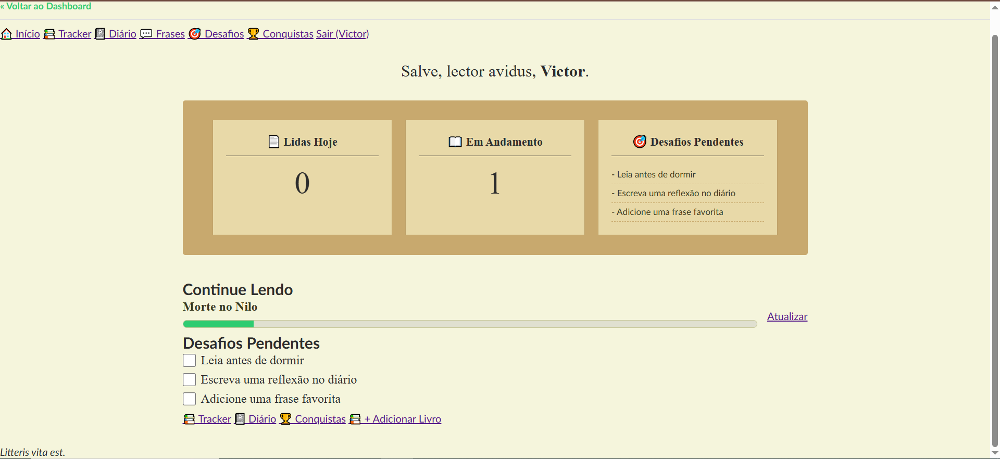
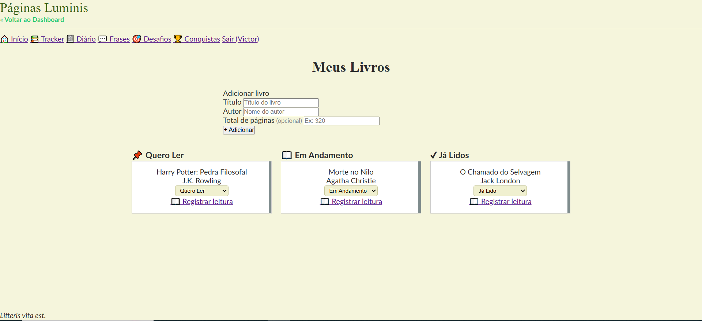
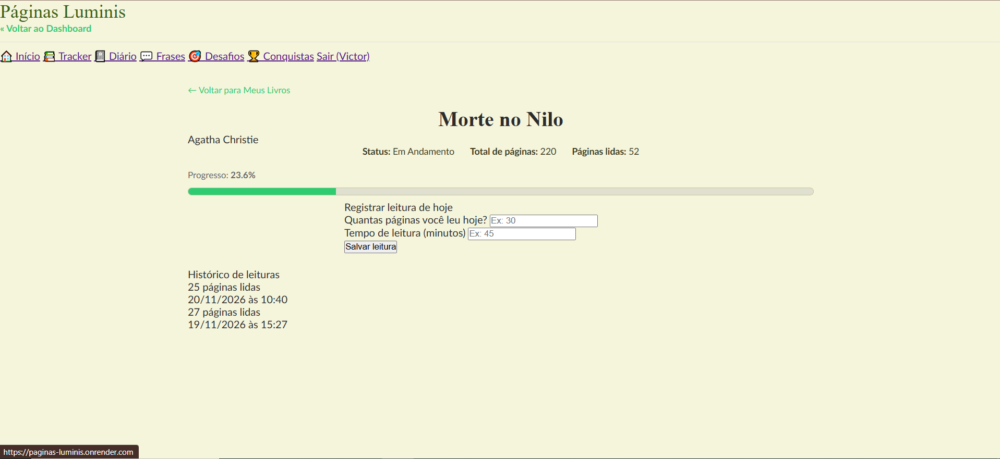
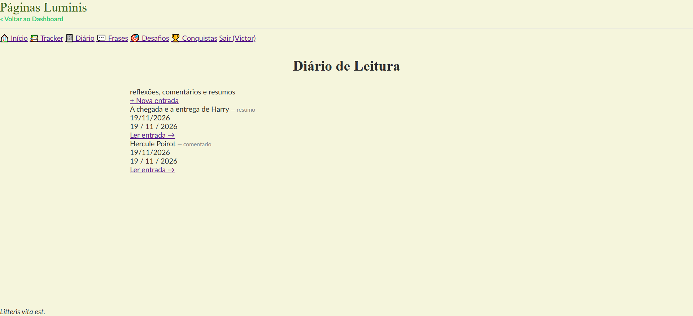
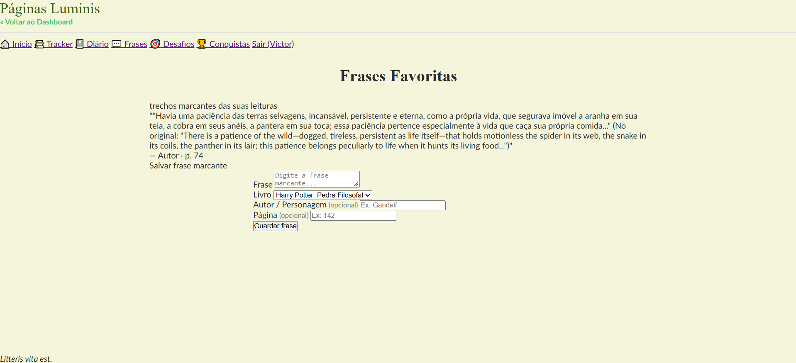
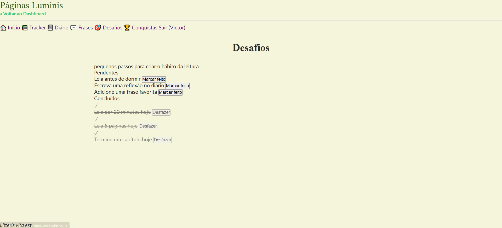
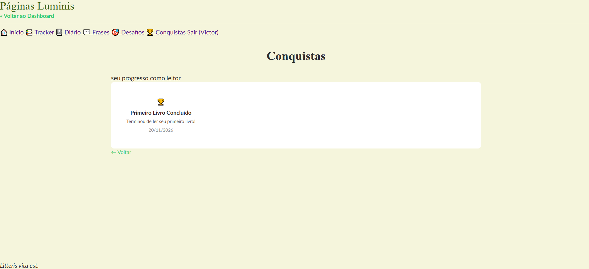
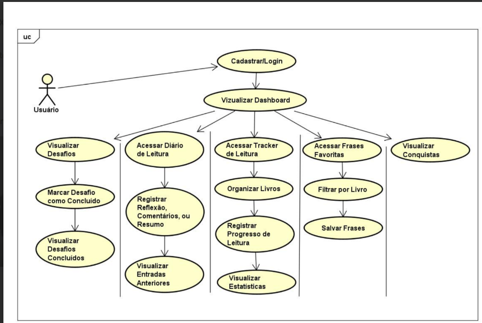
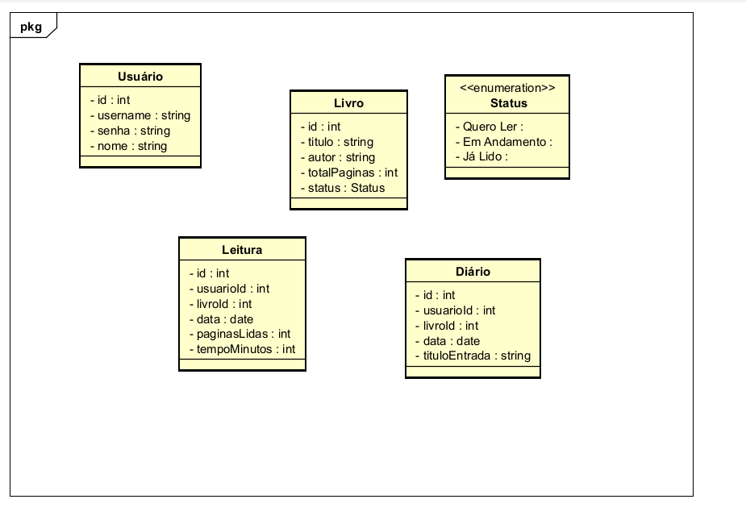
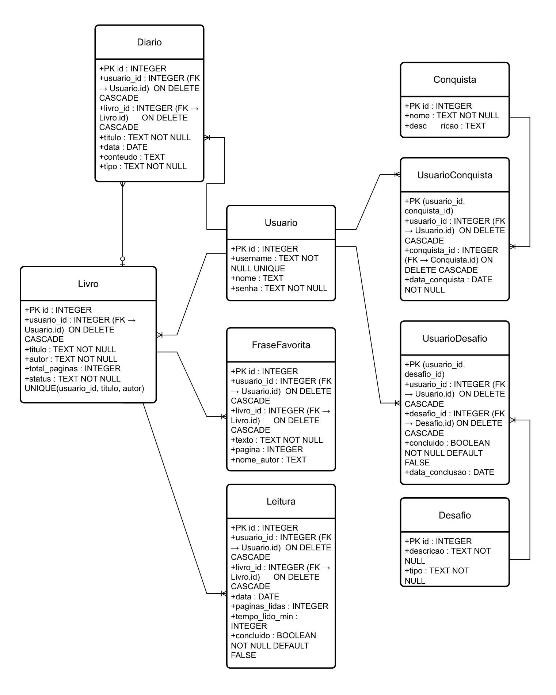

O problema
Segundo a pesquisa Retratos da Leitura no Brasil (2024), o país perdeu 6,7 milhões de leitores em quatro anos. Pela primeira vez, a maioria da população (53%) não leu nem parte de um livro nos três meses anteriores à pesquisa, e apenas 27% leram um livro inteiro no período.
O Páginas Luminis responde a esse cenário com uma proposta simples: tornar a leitura mais envolvente e constante, especialmente para quem ainda não lê com frequência, usando pequenos desafios, registro de progresso e recompensas leves.
Funcionalidades
🏠 Dashboard
Resumo do dia: páginas lidas hoje, livros em andamento e desafios pendentes.
📚 Tracker de leitura
Livros organizados em Quero Ler, Em Andamento e Já Lido, com barra de progresso por páginas.
📓 Diário de leitura
Resumos, reflexões e comentários, com página própria para reler cada entrada.
💬 Frases favoritas
Trechos marcantes salvos e organizados por livro.
🎯 Desafios
Desafios diários e semanais que podem ser marcados como concluídos.
🏆 Conquistas
Recompensas leves, como concluir o primeiro livro, para reforçar a motivação.
A aplicação por dentro







Como foi construído
Aplicação
Python 3, Flask, Jinja2 e JavaScript. Autenticação com sessões e senhas protegidas por hash (Werkzeug).
Banco de dados
SQLAlchemy com SQLite em desenvolvimento e PostgreSQL (Neon) em produção, escolhido por variável de ambiente.
Hospedagem
Render (Web Service com Gunicorn), com deploy automático a cada push no GitHub.
Testes e usabilidade
Testes automatizados: 9 testes com pytest cobrindo cadastro, login, adição e listagem de livros e registro de leitura, incluindo a conclusão automática do livro e a validação de entradas inválidas. Os testes usam um banco em memória, sem afetar dados reais.
Teste de usabilidade: uma pessoa executou um roteiro de 5 tarefas por chamada de vídeo, sem receber dicas. Os problemas encontrados viraram as melhorias abaixo.
| Problema observado | Melhoria implementada |
|---|---|
| Registrar leitura era quase impossível: o caminho até o formulário não era óbvio | Botão "Registrar leitura" em cada livro do Tracker |
| Era difícil encontrar onde adicionar um livro | Atalho "+ Adicionar Livro" na página inicial |
| Não havia como abrir uma entrada do diário já criada | Nova página de leitura da entrada e botão "Ler entrada" |
Diagramas
Casos de uso

Diagrama de classes

Diagrama entidade-relacionamento (DER)

Autores
Projeto de extensão do curso de Engenharia de Software (EaD) da UniFil, desenvolvido por Jesse de Oliveira e Vincenzo Izzo.